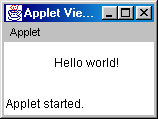

Feedback Form
The JavaTM
Tutorial
|
|
Start of Tutorial > Start of Trail |
Search
Feedback Form |

Question 1: When you compile a program written in the Java programming language, the compiler converts the human-readable source file into platform-independent code that a Java Virtual Machine can understand. What is this platform-independent code called?
Answer 1: Bytecode.
Question 2: Which of the following is not a valid comment:a.
/** comment */
b./* comment */
c./* comment
d.// commentAnswer 2: c is an invalid comment.
Question 3: In The Java Tutorial, what is the URL of the page that describes Khwarazm? (Hint: You can find the answer by going to the home page and clicking on the link to the Search page where you can perform a search.)Answer 3: http://java.sun.com/docs/books/tutorial/information/FAQ.html#knm
Question 4: Answer the following questions: a. What is the highest version number of the Java 2 SDK, Standard Edition, that is available for download (early-access releases included)? (Hint: You can find the answer at http://java.sun.com/j2se/.)Answer 4a: Answer on 11/23/00: JavaTM 2 SDK, Standard Edition, version 1.3.0.b. What is the highest version number for an SDK that you can download and use in shipping products (that is, not an early-access release)?
Answer 4b: Answer on 11/23/00: JavaTM 2 SDK, Standard Edition, version 1.3.0.c. What is the lowest version number for an SDK that you can download? (Note that "SDK" used to be called "JDK.")
Answer 4c: Answer on 11/23/00: JDK 1.0.2 from http://java.sun.com/products/jdk/1.0.2/
Question 5: Answer the following questions:a. Which bug has the highest number of votes at the Java Developer Connection? Give the bug number, description, and number of votes. (Hint: Look for the answer at http://developer.java.sun.com/developer/bugParade/.)Question 6: What is the first thing you should check if the interpreter returns the error:
Answer 5a: Answer on 11/23/00: bug number #4204845; Remote use of double buffering on JDK 1.2 is very slow; 365 votes.b. Does the bug report give a workaround? If so, what is it?
Answer 5b: Yes. One is published in the Workaround section of the bug. Another place where workarounds are often published is the "Your Comments and Workarounds" section of the page.Exception in thread "main" java.lang.NoClassDefFoundError: HelloWorldApp.java.Answer 6: Check your classpath. The interpreter cannot find your class.
Exercise 1: Change the
HelloWorldApp.javaprogram so that it displays
Hola Mundo!instead ofHello World!.Answer 1: This is the only line of code that must change:
final JLabel label = new JLabel("Hola Mundo");
Exercise 2: Get the following file from the online Tutorial:Useless.javaAnswer 2: This program prints out your default locale; for example,
en_USindicates U.S. English.
Exercise 3: You can find a slightly modified version of
HelloWorldApphere:HelloWorldApp2.java
The program has an error. Fix the error so that the program successfully compiles and runs. What was the error?Answer 3: Here's the error you get when you try to compile the program:
HelloWorldApp2.java:7: unclosed string literal System.out.println("Hello World!); //Display the string. ^ HelloWorldApp2.java:7: ')' expected System.out.println("Hello World!); //Display the string. ^ 2 errorsTo fix this mistake, you need to close the quotation marks around the string. Here is the correct line of code:
System.out.println("Hello World!"); //Display the string.
Exercise 4: Change the height of the
HelloWorldapplet from25to50. Describe what the modified applet looks like.Answer 4: To answer this question correctly, make sure you modify the applet's height HTML file -- not the
.javafile. Here is a snapshot of the resulting applet:
Exercise 5: Download the following two source files:
Compile the files, and then run the resulting program. What is the output? If you have trouble compiling the files but have successfully compiled before, try unsetting theCLASSPATHenvironment variable, and then compile again.Answer 5: The key is to compile and run the
SecondClass.FirstClassdoes not have amainmethod, so it cannot run independently.Here's the output (if your locale is U.S. English):
English (United States)

|
|
Start of Tutorial > Start of Trail |
Search
Feedback Form |